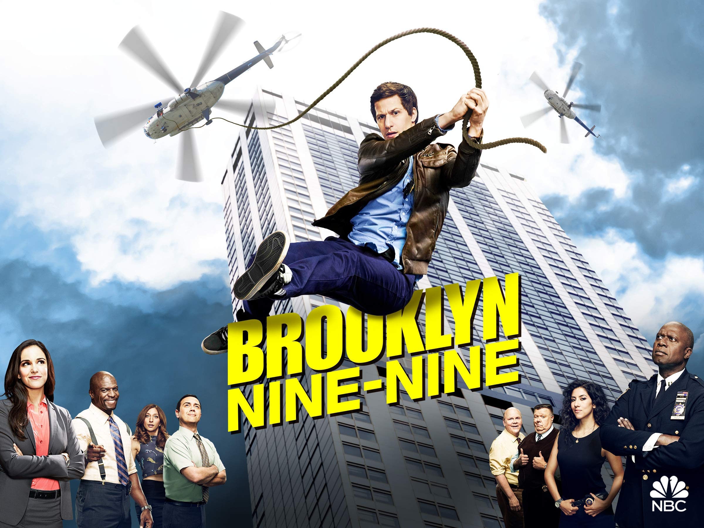

Brooklyn Nine-Nine is an American police procedural comedy television series created by Dan Goor and Michael Schur. The series revolves around Jake Peralta (Andy Samberg), an immature but talented NYPD detective in Brooklyn's fictional 99th Precinct, who often comes into conflict with his new commanding officer, the serious and stern Captain Raymond Holt (Andre Braugher). The rest of the cast features Stephanie Beatriz as Rosa Diaz, Terry Crews as Terry Jeffords, Melissa Fumero as Amy Santiago, Joe Lo Truglio as Charles Boyle, Chelsea Peretti as Gina Linetti, Dirk Blocker as Michael Hitchcock, and Joel McKinnon Miller as Norm Scully.
